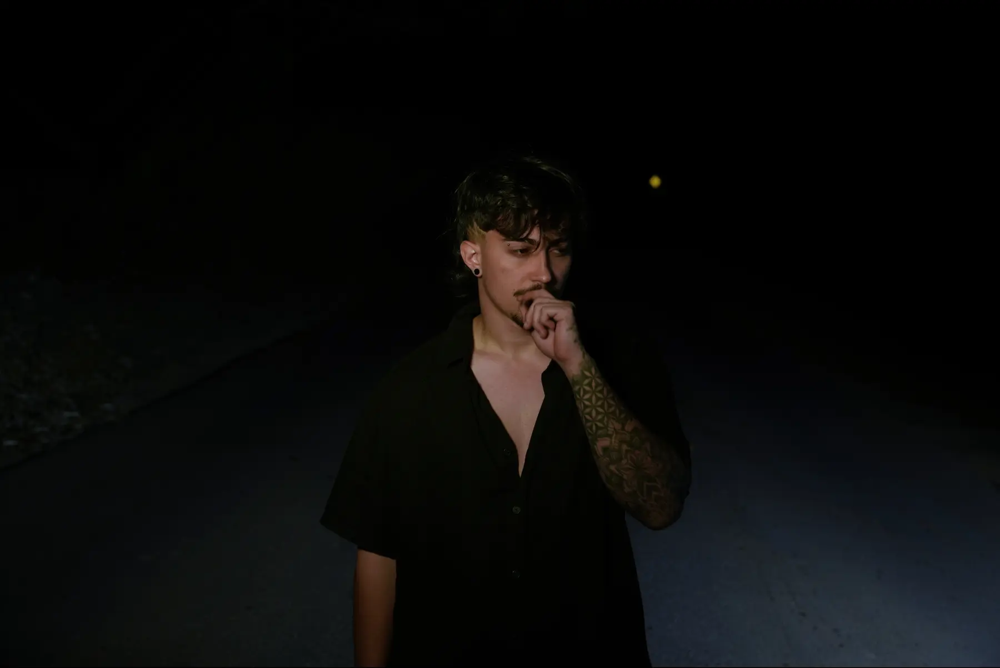
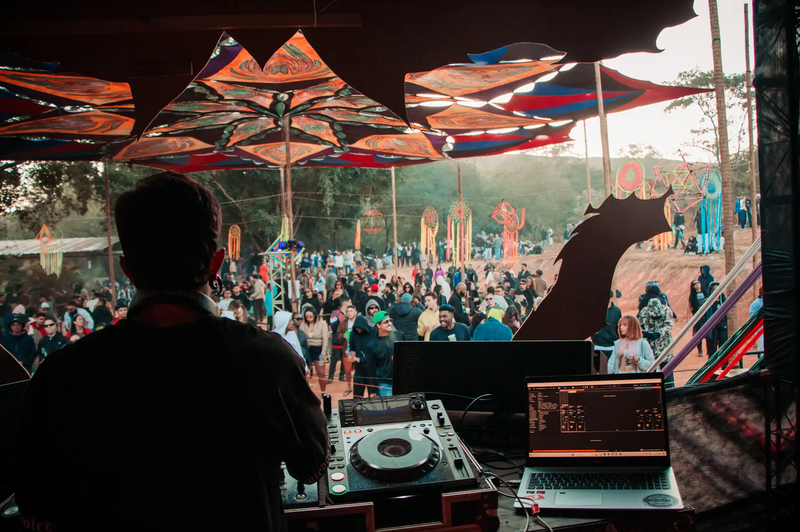
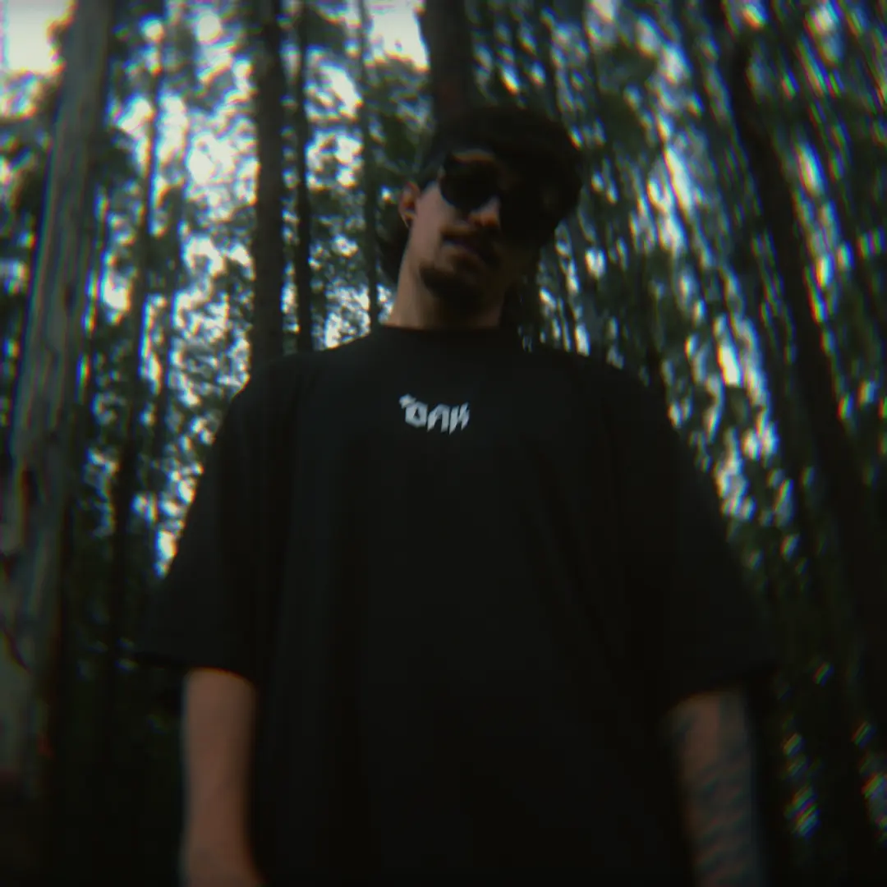
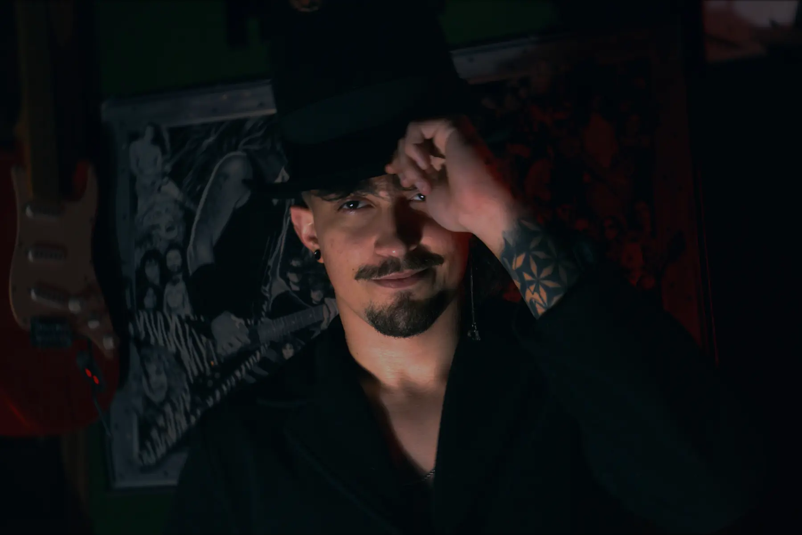

A história
História do Oak
João Victor Carvalho é o cérebro por trás do Oak.
Sempre foi apaixonado pela cena psicodélica, e em 2022 deu início ao projeto com uma proposta única e original.
As produções trazem referências do dark progressive, do techno, do psytechno e do jazz.
Sons imersivos e hipnóticos se encontram com o explosivo e o dançante. Cada set conta uma história, numa atmosfera cinematográfica e psicodélica.
Organizador da Green Garden pvt e da Progstyle, e sócio do Green Garden Festival.
Som
Isto não é jazz.
Quatro trechos que ele escolheu para o press kit. Aperte o play: a página inteira acompanha a batida.
No Spotify
- This is Not Jazz
- Baba Yaga × Alicid
- Swing, Baby × JOX
- Dialogue in the Void
- Addicted
- Alone Child × tohd
O player é do Spotify e só carrega quando você pedir.
Noites
Por onde o Oak passou
01 / 07
Dream On
Infinity
Noite Mágica
Réveillon Psicodélico
Sintetika
Horus
GG Showcase
Aftermovies
Assista de perto
Toque num filme para ver inteiro, com som.
Retratos




Booking
Leve o Oak para a sua noite
Preencha e o pedido vai pronto para o WhatsApp do Oak. Festival, club, private ou open air.
Press kit